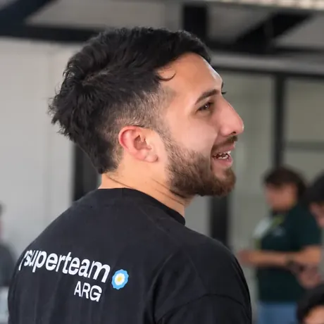
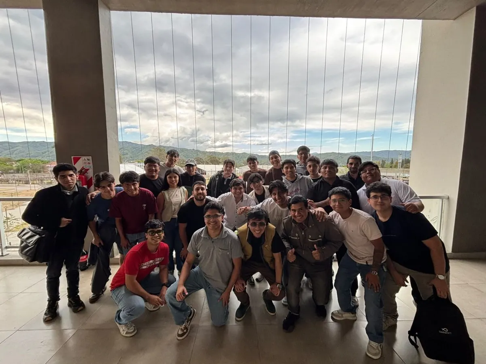
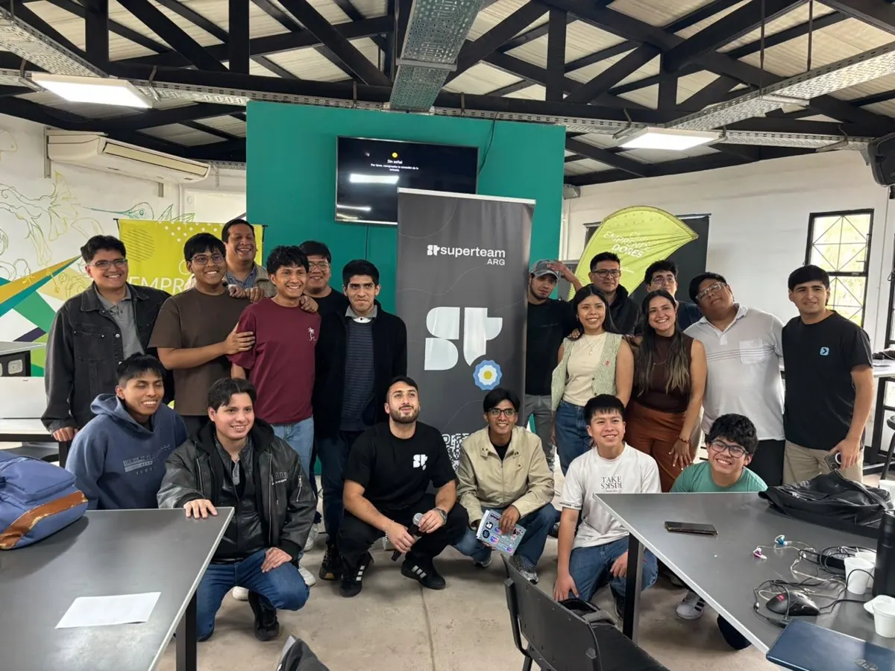
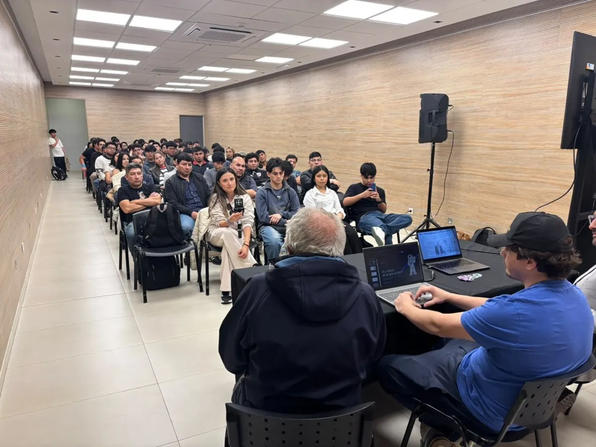
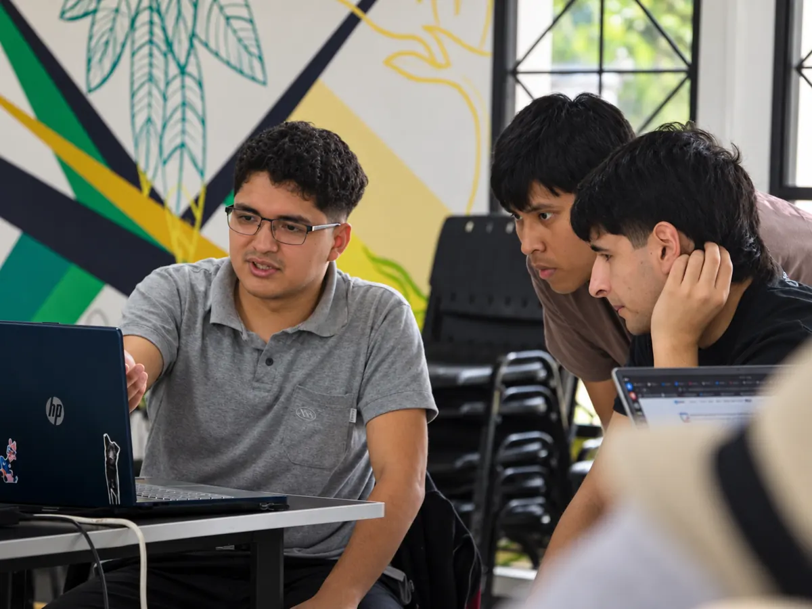
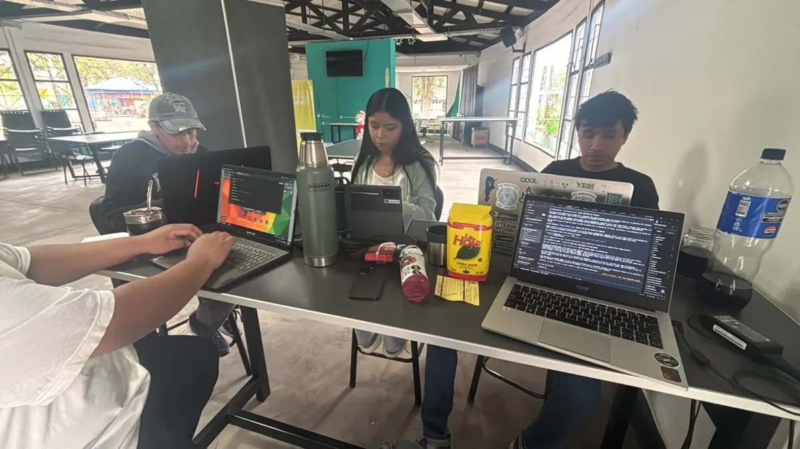
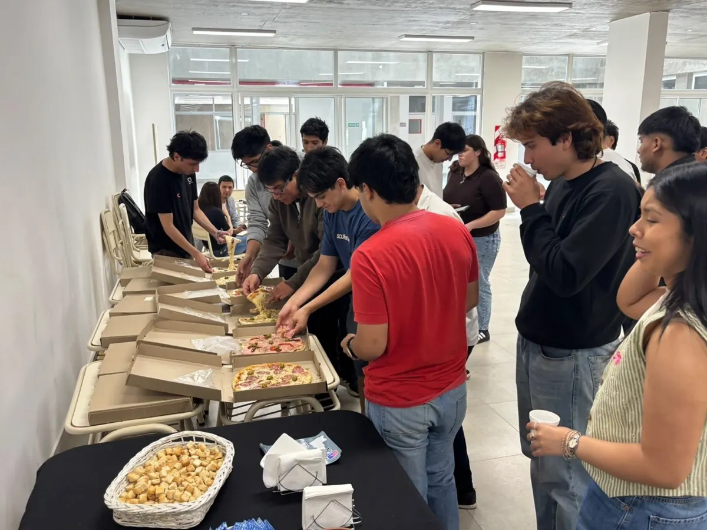
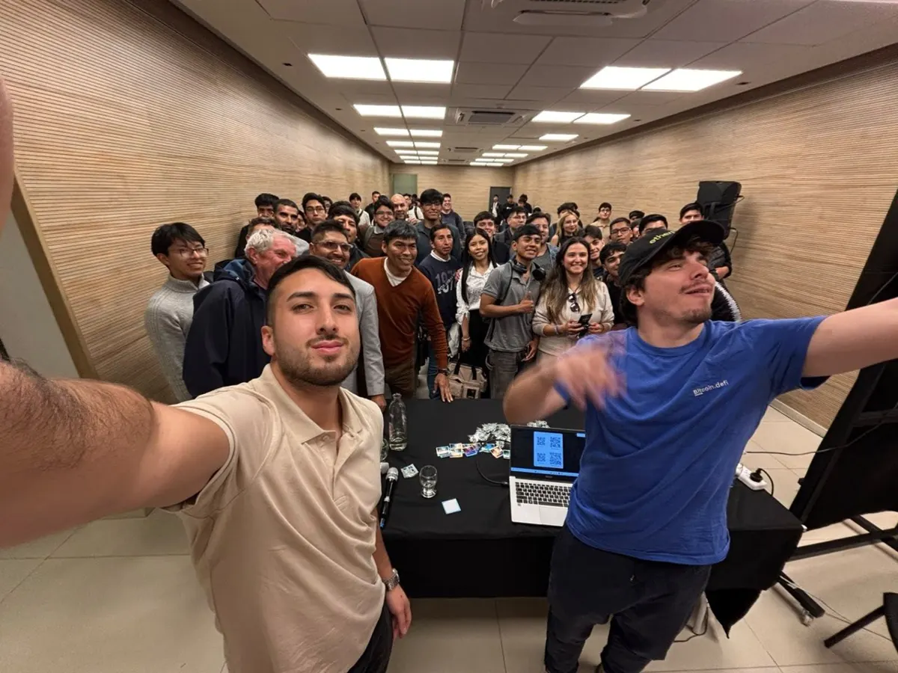
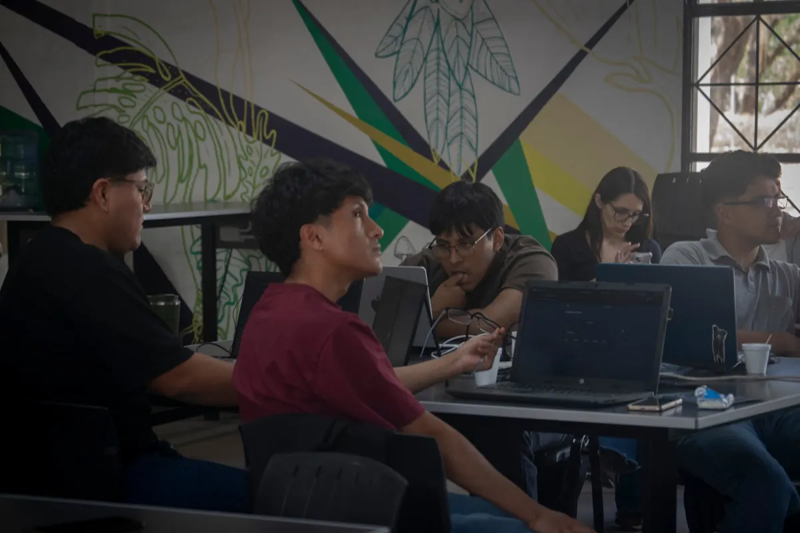
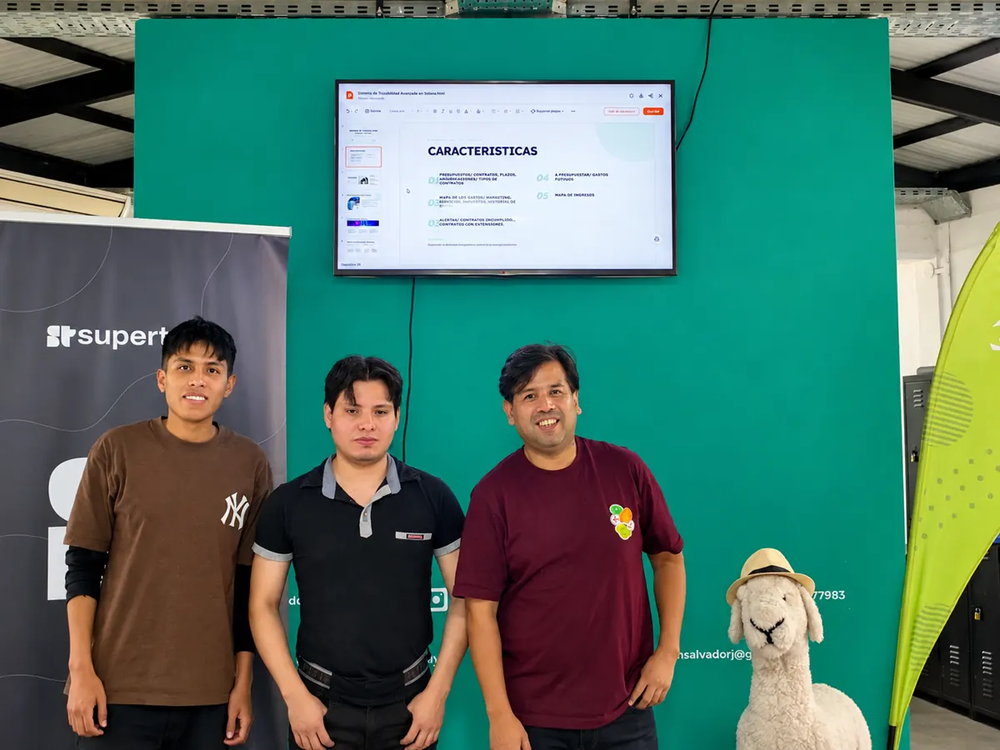

01Franco Duran
Fundador · Software Developer
Meetups, workshops y hackatones para +600 devs, diseñadores y curiosos del norte argentino.
Deslizá ↓Somos la comunidad de programadores, desarrolladoras y emprendedores tech de San Salvador de Jujuy.
Nacimos en septiembre de 2026 y el primer meetup fue el 3 de septiembre en Fundación CIDEJ. Los encuentros son presenciales o virtuales, gratuitos y abiertos a todos, sin nivel mínimo para participar. Anunciamos las próximas fechas por WhatsApp, Instagram y X.

Charlas cortas, networking y gente nueva. El primero juntó a 51 personas en Fundación CIDEJ.
IA, desarrollo web, mobile y cloud. Traé tu compu y salí con algo funcionando.
Equipos mixtos y problemas reales. Nos preparamos juntos para las hackatones de Superteam y Monad.
Cuando publiquemos un encuentro, aparece acá. Mientras tanto, mirá el calendario en Luma →
Hackatones, Web3 y becas para estudiar en EE. UU. 77 personas conectadas.
Ver cómo fue →
Workshop de IA y charla de Jorge Gronda.
Ver cómo fue →
51 personas en el primer encuentro de la comunidad.
Ver cómo fue →
Charlas, talleres, hackatones o una juntada para tomar algo. Si querés organizar o dar una charla, contanos.








+600
Cada persona que se suma viaja en una ventanita del Tren Solar de la Quebrada.
Sumate con GitHubMandá un PR con tu foto y tu usuario de GitHub, y te subimos al tren.
El grupo principal. Avisos de eventos, preguntas y oportunidades.
Entrar al grupo →Este sitio es open source. Tu primer PR puede ser sumar un evento o tu logo.
Ver el repo →Fotos, eventos y los momentos de la comunidad.
@jujuy.dev →Novedades, hilos y lo que está pasando en la comunidad.
@JujuyDevAr →Empresas, universidades y comunidades que apoyan el ecosistema tech de Jujuy.
Si tu empresa, universidad o comunidad quiere sumarse, hablemos.
No. Los meetups no piden nivel mínimo ni conocimientos previos: vienen personas que recién empiezan, gente de diseño, de producto y de otras carreras.
Nada. Los meetups no tienen costo de entrada y el grupo de WhatsApp y los canales de la comunidad tampoco piden pago.
Escribinos a jujuydev@gmail.com con tu idea de charla, taller o evento. Te respondemos para coordinar fecha, lugar y formato. Buscamos voces nuevas.
Sumá un pull request al repositorio en GitHub, ayudá a organizar eventos o a moderar el grupo de WhatsApp.
¿Tenés una idea, querés dar una charla o sumar a tu empresa? Escribinos a jujuydev@gmail.com.
Gente de la comunidad que pone tiempo y ganas para armar los meetups, conseguir los lugares y empujar la comunidad tech del norte. ¿Querés sumarte a organizar? Escribinos →

01Fundador · Software Developer
Organización · Software Developer
Organización · Estudiante de Ing. Informática
Organización · Full-Stack Developer
Organización · Ciberseguridad
Organizar eventos, moderar el grupo o mantener este sitio.